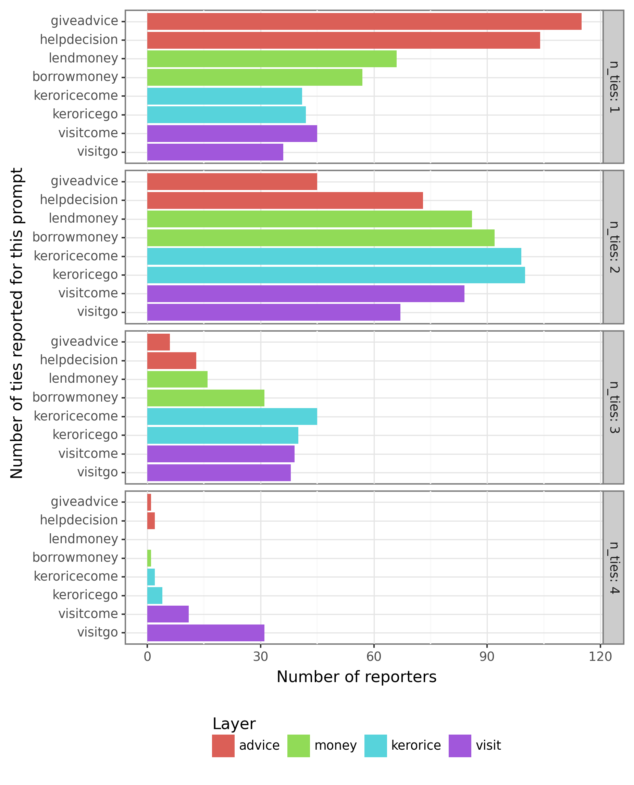
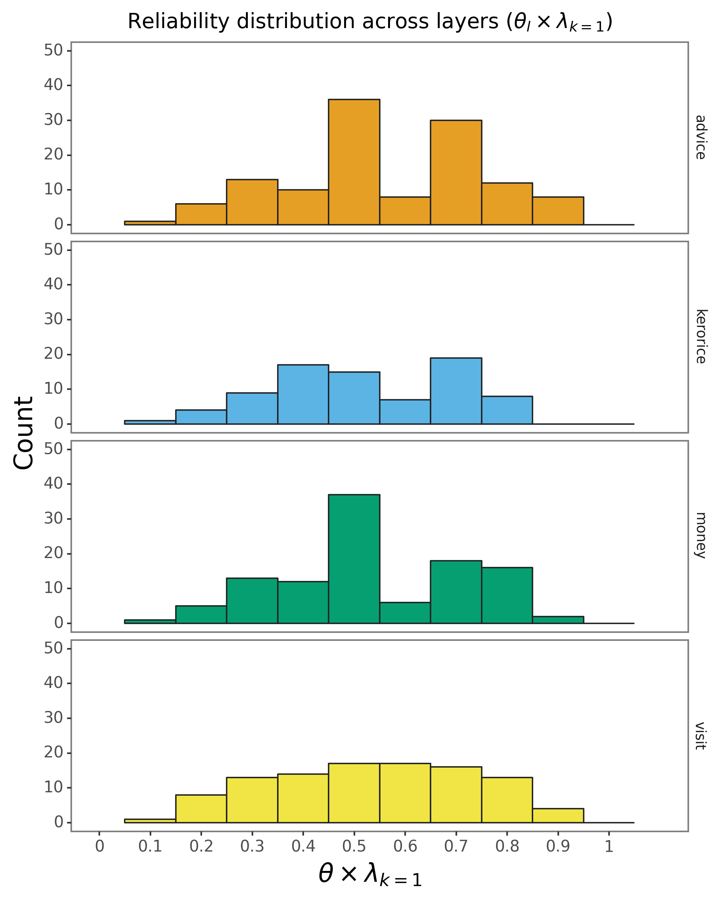

💻 Tutorial 02: Introduction to VIMuRe in Python
VIMuRe v0.1.1 (latest)
If you use VIMuRe in your research, please cite (De Bacco et al. 2023).
TLDR: By the end of this tutorial, you will be able to:
- Load data into
VIMuRe - Fit a model to your data
- Obtain estimates of the latent network structure
Found an interesting use case for VIMuRe? Let us know! Open a discussion on our GitHub repository.
⚙️ Setup
Import packages
import pandas as pd
import vimure as vm⚠️ Ensure you have installed the latest version of VIMuRe before running this tutorial. Follow the 📦 Installation instructions if you haven’t already.
📥 Step 1: Load the data
Here, we’ll use the VIMuRe package to model social networks from a village in Karnataka, India, gathered as part of a project studying the adoption of microfinance (Banerjee et al. 2013b). The data files we use here are derived from those openly-available on the Harvard Dataverse page (Banerjee et al. 2013a). See 💻 Tutorial 1 for more details on how to prepare data for VIMuRe.
We have selected a particular village to focus on. The dataset contains information on multiple different types of relationships. We are interested in relationships that were “double-sampled” in the original survey, meaning those elicited through two different prompts. For example, respondents were asked both “If you needed to borrow kerosene or rice, to whom would you go?” as well as “Who would come to you if he/she needed to borrow kerosene or rice?” These two different prompts should give us different perspectives on what could be the same relationship. If everyone in the network is being surveyed, then this should mean that we are eliciting information on a relationship twice (hence, “double sampling”): we’re asking ego if they go to alter for help, and also asking ego if alter comes to them for help.
Four different tie types (or “layers”) were double-sampled in this way (i.e., elicited with two prompts). Here, we will use all four layers to model the latent network structure. The four layers are:
money: lending and borrowing moneyadvice: giving and receiving advicevisit: visiting and being visitedkerorice: lending and borrowing of household items
We stored all the data in a single data frame, edgelist.
Click to see the code we used
# Here we are using the get_layer() function defined in Tutorial 01
edgelist_money, reporters_money = get_layer(1, "money", get_indivinfo(METADATA_FILE), raw_csv_folder=RAW_CSV_FOLDER)
edgelist_visit, reporters_visit = get_layer(1, "visit", get_indivinfo(METADATA_FILE), raw_csv_folder=RAW_CSV_FOLDER)
edgelist_advice, reporters_advice = get_layer(1, "advice", get_indivinfo(METADATA_FILE), raw_csv_folder=RAW_CSV_FOLDER)
edgelist_kerorice, reporters_kerorice = get_layer(1, "kerorice", get_indivinfo(METADATA_FILE), raw_csv_folder=RAW_CSV_FOLDER)
edgelist = pd.concat([edgelist_money, edgelist_visit, edgelist_advice, edgelist_kerorice])
del edgelist_money, edgelist_visit, edgelist_advice, edgelist_kerorice
reporters = reporters_money.union(reporters_visit).union(reporters_advice).union(reporters_kerorice)
del reporters_money, reporters_visit, reporters_advice, reporters_kerorice
# The code below should help you confirm that all reporters appear in the edgelist:
reporters.difference(set(edgelist.reporter)) # This should return an empty setAfter our preprocessing, the input data takes the form of the dataset given below.
ego: generally the requester, who is also referred to as \(i\) in (De Bacco et al. 2023) (required ✔️)alter: generally the giver, also referred to as \(j\) in (De Bacco et al. 2023) (required ✔️)reporter: the person reporting on the tie, as referred to as \(m\) in (De Bacco et al. 2023) (required ✔️)tie_type: the prompt type that was given, e.g., borrow money or lend money (optional)layer: the relationship type, e.g., money (optional)weight: the weight of the edge, e.g., the actual amount of money transferred (optional)
Suppose we have a data frame edgelist of our village’s data that looks like this:
edgelist.sample(n=10, random_state=1)| ego | alter | reporter | tie_type | layer | weight |
|---|---|---|---|---|---|
| 107303 | 107307 | 107307 | helpdecision | advice | 1 |
| 116402 | 115702 | 116402 | keroricecome | kerorice | 1 |
| 103202 | 117301 | 103202 | giveadvice | advice | 1 |
| 116201 | 110401 | 116201 | keroricecome | kerorice | 1 |
| 114606 | 109701 | 109701 | keroricego | kerorice | 1 |
| 101302 | 116201 | 101302 | visitcome | visit | 1 |
| 111204 | 110701 | 111204 | lendmoney | money | 1 |
| 108304 | 111502 | 108304 | keroricecome | kerorice | 1 |
| 117301 | 113901 | 113901 | borrowmoney | money | 1 |
| 106201 | 116105 | 106201 | keroricecome | kerorice | 1 |
Alternatively, you might have your data as a directed igraph object. In this case, you must ensure that the igraph object has the following edge attributes:
reporter: the person reporting on the tie, as referred to as \(m\) in (De Bacco et al. 2023) (required ✔️)tie_type: the prompt type that was given (optional)layer: the tie type (optional)weight: the weight of the edge (optional)
Note that the igraph function assumes that the first two columns in the data frame comprise the edge list (i.e., the \(ego\) and \(alter\) columns and treat all subsequent columns as edge attributes).
import igraph as ig
G = ig.Graph.DataFrame(edgelist, directed=True, use_vids=False)Suppose our village’s data is in the form of an igraph object G:
print(G.summary())which gives us the following output:
IGRAPH DNW- 417 2690 --
+ attr: name (v), layer (e), reporter (e), tie_type (e), weight (e)📊 Step 2: Summary statistics
Let’s take a closer look at how many nodes and edges we have in our data. We can also look at how many reporters we have in our data.
2.1: Number of nodes and edges
unique_nodes = pd.concat([edgelist['ego'], edgelist['alter']]).unique()
print(f"Number of nodes: {len(unique_nodes)}")
print(f"Number of edges: {len(edgelist)}")which yields:
Number of nodes: 417
Number of edges: 2690print(f"Number of nodes: {G.vcount()}")
print(f"Number of edges: {G.ecount()}")which yields:
Number of nodes: 417
Number of edges: 26902.2: Number of reporters
reporters = edgelist["reporter"].unique()
print(f"Number of reporters: {len(reporters)}")Number of reporters: 203reporters = set(G.es["reporter"])
print(f"Number of reporters: {len(reporters)}")Number of reporters: 203 2.3: Average number of ties per reporter
There are a couple of things to note about this dataset: reporters could name a maximum of four alters for each question, and reporters can only report on ties that they are a part of (e.g., if a reporter is not part of a tie, they cannot report on it). Because we are modelling double-sampled questions, each reporter can report a maximum of 8 ties.
Let’s create a plot to visualise the distribution of the number of ties per reporter:
# Create a plot_df to summarise the number of ties per reporter
plot_df = (
edgelist.groupby(['layer', 'tie_type', 'reporter'])
.size()
.reset_index(name='n_ties')
.groupby(['n_ties', 'tie_type', 'layer'])
.size()
.reset_index(name='n_reporters')
.sort_values(["layer", "n_ties", "tie_type"])
)# Create a plot_df to summarise the number of ties per reporter
plot_df = (
pd.DataFrame({attr: G.es[attr] for attr in ["reporter", "tie_type", "layer"]})
.groupby(["reporter", "layer"])
.apply(lambda x: x["tie_type"].value_counts())
.reset_index(name="n_ties")
.rename(columns={"level_2": "tie_type"})
.groupby(["n_ties", "tie_type", "layer"])
.size()
.reset_index(name="n_reporters")
.sort_values(["layer", "n_ties", "tie_type"])
)producing the following table:
| n_ties | tie_type | layer | n_reporters |
|---|---|---|---|
| 1 | giveadvice | advice | 115 |
| 1 | helpdecision | advice | 104 |
| 2 | giveadvice | advice | 45 |
| 2 | helpdecision | advice | 73 |
| 3 | giveadvice | advice | 6 |
| 3 | helpdecision | advice | 13 |
| 4 | giveadvice | advice | 1 |
| 4 | helpdecision | advice | 2 |
| n_ties | tie_type | layer | n_reporters |
|---|---|---|---|
| 1 | keroricecome | kerorice | 41 |
| 1 | keroricego | kerorice | 42 |
| 2 | keroricecome | kerorice | 99 |
| 2 | keroricego | kerorice | 100 |
| 3 | keroricecome | kerorice | 45 |
| 3 | keroricego | kerorice | 40 |
| 4 | keroricecome | kerorice | 2 |
| 4 | keroricego | kerorice | 4 |
| n_ties | tie_type | layer | n_reporters |
|---|---|---|---|
| 1 | borrowmoney | money | 57 |
| 1 | lendmoney | money | 66 |
| 2 | borrowmoney | money | 92 |
| 2 | lendmoney | money | 86 |
| 3 | borrowmoney | money | 31 |
| 3 | lendmoney | money | 16 |
| 4 | borrowmoney | money | 1 |
| n_ties | tie_type | layer | n_reporters |
|---|---|---|---|
| 1 | visitcome | visit | 45 |
| 1 | visitgo | visit | 36 |
| 2 | visitcome | visit | 84 |
| 2 | visitgo | visit | 67 |
| 3 | visitcome | visit | 39 |
| 3 | visitgo | visit | 38 |
| 4 | visitcome | visit | 11 |
| 4 | visitgo | visit | 31 |
Alternatively as a bar plot:
Click to show plot code
from plotnine import *
plot_df["tie_type"] = pd.Categorical(plot_df["tie_type"],
categories=["visitgo", "visitcome",
"keroricego", "keroricecome",
"borrowmoney", "lendmoney",
"helpdecision", "giveadvice"])
plot_df["layer"] = pd.Categorical(plot_df["layer"], categories=["advice", "money", "kerorice", "visit"])
g = (
ggplot(plot_df, aes(x = "tie_type", y="n_reporters", fill="layer")) +
geom_col() +
coord_flip() +
facet_grid("n_ties ~ .", labeller="label_both") +
theme_bw() +
theme(legend_position = "bottom",
legend_box_spacing = 0.5) +
labs(x = "Number of ties reported for this prompt",
y = "Number of reporters",
fill = "Layer")
)
ggsave(g, "tutorial02_fig01.png", width=6, height=8, dpi=300)
Note that the plot above only represents the reports made by the 203 nodes that appear in the reporter column. Given that the total number of nodes in the network is 417, either some nodes did not report on any ties, or they were not interviewed at all.
VIMuRe will consider all nodes in the network, even if they are not present in the reporter column. If you want to restrict your analysis to include only the network of reporters, you must filter the edge list before proceeding.
2.4: Union vs. Intersection and the concept of Concordance
Concordance is the proportion of the ties in the network that both reporters report. It measures the extent to which the two reporters agree about the tie (see (Ready and Power 2021) for a discussion of concordance in the Karnataka network data). It is calculated as follows:
\[ \text{Concordance} = \frac{\text{\# of ties reported by both reporters}}{\text{\# number of unique ties reported}} \]
# Take the intersection: keep only records where
# both reporters report on the same tie in both tie_types
df_intersection = (
edgelist.groupby(['ego', 'alter'], dropna=False)
.filter(lambda x: len(x) == 2)
.loc[:, ['ego', 'alter']]
.drop_duplicates()
)
# Take the union: keep all ties reported
# irrespective of tie_type and how many times they were reported
df_union = edgelist.loc[:, ['ego', 'alter']].drop_duplicates()
# Concordance
concordance = len(df_intersection) / len(df_union)
print(f"Concordance is: {concordance}")# Take the intersection: keep only records where
# both reporters report on the same tie in both tie_types
which_edges_intersection = [e for e in G.es if G.count_multiple(e) == 2]
G_intersection = G.subgraph_edges(which_edges_intersection)
G_intersection = G_intersection.simplify()
# Take the union: keep all ties reported
# irrespective of tie_type and how many times they were reported
G_union = G.simplify()
# Concordance
print("Concordance is:", G_intersection.ecount() / G_union.ecount())producing:
Concordance is: 0.2002262443438914📦 Step 3: Use vimure package to run the model
Now that you have prepared your data, you can use vimure to run the model:
import vimure as vm
# Run the model
model = vm.model.VimureModel()
model.fit(edgelist)import vimure as vm
# Run the model
model = vm.model.VimureModel()
model.fit(G)(If you would like to see what the model is doing, you can set verbose=True in the fit() method)
After which, you might be interested to look at the posterior estimates of the model parameters:
# Returns a dictionary with the posterior estimates of the model parameters
posterior_estimates = model.get_posterior_estimates()
# Check which parameters were estimated
posterior_estimates.keys()dict_keys(['nu', 'theta', 'lambda', 'rho'])We will look at what these mean in the next section.
3.1: Posterior Estimates
The four values you get from the get_posterior_estimates() method are the geometric expectations of the distributions of the following parameters:
| Parameter | Symbol | Description |
|---|---|---|
nu |
\(\nu\) | The inferred mutuality for the network (latent equivalent to \(\eta\)) |
theta |
\(\theta_{lm}\) | The “reliability” of a reporter \(m\) on layer \(l\) |
lambda |
\(\lambda_{lk}\) | The latent contribution that \(Y_l=k\) has on \(\theta_{lm}\), where \(k \in \{1, \ldots, K\}\) represents the weight of the tie. |
rho |
\(\rho_{lijk}\) | The probability that a directed tie of weight \(k-1\) exists between nodes \(i\) and \(j\) on a particular layer \(l\) |
Remember that the expected value of our model is:
\[ \mathbb{E} \left[X_{lijm}^{}|Y_{lij}^{} = k\right] = \theta_{lm}\lambda_{lk}^{}+\eta X_{ljim}^{} \]
where \(X_{lijm}^{}\) is the observed value of the tie between nodes \(i\) and \(j\) reported by reporter \(m\) on layer \(l\) and \(Y_{lij}^{}\) is the “ground truth” of the strength of the directed tie between nodes \(i\) and \(j\) on layer \(l\).
In the subsections below, we will provide an explanation of \(\nu\) and \(\theta_{lm}\) parameters and how to reason about the mutuality and “reliability” of reporters. \(\rho\) and \(\lambda\) are more technical and we will go into detail about them in a future tutorial.
A quick note about \(\rho\)
If you want to extract a quick point estimate of the inferred network, you can simply take the expected value of \(\rho\) for \(k=1\):
# Expected value of rho for k=1
rho = posterior_estimates['rho'][0,:,:,1]The code above will return a \(N \times N\) weighted adjacency matrix which can be thought of as the probability of a tie between individuals \(i\) and \(j\) on layer \(l = 0\) (Tutorial 03 will go into more detail about how to interpret the \(\rho\) parameter.)
Now let’s look at parameters \(\nu\) and \(\theta_{lm}\):
3.1.1: Mutuality (\(\nu\) or \(\eta\))
In our case study:
posterior_estimates['nu']0.6177802251078235This indicates a large mutuality in the network. That is, if \(i\) reports that \(j\) lends money to them, then \(i\) is likely to report that \(j\) also borrows money from them.
This is a network-wide parameter and encompasses all layers. If you have reasons to believe mutuality varies across layers, you have to re-run the model for each layer separately.
3.1.2: Under-reporting vs over-reporting: a combination of (\(\theta_{lm} \times \lambda_{lk}\))
First, let’s look at the shape of the \(\theta\) array:
posterior_estimates['theta'].shape(4, 417)We only have one layer, so the first dimension is 1. The second dimension is the number of reporters in the network. In our case, this shows that VIMuRe infers that there are 417 reporters in the network.
This parameter, combined with \(\lambda_{lk}\) represents the “reliability” of a reporter \(m\) on layer \(l\):
posterior_estimates['lambda'].shape(4, 2)The first dimension is the number of layers \(l\), and the second dimension is the strength of the tie, which in this case can assume the values \(k \in \{0, 1\}\). We only have two possible values for \(k\) because that is the default setting for the VimureModel class. If you want to model more than two possible values for \(k\), you can set the K parameter when running the fit function: model.fit(..., K=3).
Combined, these two parameters indicate the probability that a reporter will tend to report ties, in general, for a given layer (recall the expected value of the VIMuRe model shown in Section 3.1: Posterior Estimates). Loosely speaking, we can think of this value as the “reliability” of a reporter on a given layer.
You might be wondering why there are so many reporters, 417. After all, in Section 2.2: Number of reporters, we calculated this number to be around 200! This is due to a technicality in the way the VIMuRe package handles the data. Our current implementation represents the total number of reporters, \(M\) as \(M = N\) (i.e. the number of nodes is equal to the number of reporters).
This is akin to saying each node has the potential to be a reporter. But to control for which nodes are actually reporters, we use a binary mask, \(R_{lijm}\), which is 1 if the node \(m\) is a reporter on layer \(l\) for the tie between nodes \(i\) and \(j\) and 0 otherwise. You can control how this mask is built by passing the R parameter to the fit() method. Read more about it in section 3.3: A note on the reporter mask (R).
Changing this is a priority for the next version of the package. But, as it is not a trivial change, we have decided to leave it as it is for now.
How are reporters’ “reliability” distributed across layers?
Let’s check which reporters have the highest “reliability” values, and plot the values for each layer:
Click to see the code
# Get the node mapping: which node corresponds to which index in the array
df_nodes = model.nodeNames
# Which nodes are reporters?
# Note: this assumes you have a `reporters` list from Tutorial 01
id_reporters = df_nodes[df_nodes['name'].isin(reporters)]["id"].values
df_lambda_k1 = pd.DataFrame(dict(layer=model.layerNames, lambda_k1=posterior_estimates['lambda'][:,1]))
# Add the theta values
df_theta_reporters = [
(layer_name, reporter_id, df_nodes['name'].iloc[reporter_id], posterior_estimates['theta'][l, reporter_id] * df_lambda_k1['lambda_k1'].iloc[l])
for reporter_id in id_reporters
for l, layer_name in enumerate(model.layerNames)]
df_theta_reporters = \
pd.DataFrame(df_theta_reporters,
columns=['layer', 'reporter_id', 'reporter_name', 'theta_scaled'])
# Sort by reliability (scaled by lambda_k=1)
df_theta_reporters\
.pivot(index=['reporter_id', 'reporter_name'],
columns=['layer'],
values=['theta_scaled'])\
.droplevel(0, axis=1)\
.reset_index()\
.sort_values(by=model.layerNames, ascending=False)\
.head()Click to see the code
# plotnine is the python equivalent of ggplot2
from plotnine import *
plot_df = df_theta_reporters.copy()
COLORS = ['#E69F25', '#5CB4E4', '#069F72', '#F1E545', '#0773B2', '#CC79A8']
g = (ggplot(plot_df, aes(x="theta_scaled", fill="layer")) +
geom_histogram(binwidth=0.1, color="#212121") +
theme_bw() +
facet_grid("layer ~ .", scales="free_y") +
scale_fill_manual(values=COLORS, guide=False) +
theme(figure_size=(6, 3),
axis_text_x=element_text(size=10),
axis_text_y=element_text(size=10),
panel_grid_minor=element_blank(),
panel_grid_major=element_blank(),
strip_background = element_blank(),
strip_text_x = element_text(size=10),
axis_title=element_text(size=16)) +
scale_x_continuous(name=r"$\theta \times \lambda_{k=1}$", breaks=np.arange(0, 1.1, 0.1), limits=(0, 1.1)) +
scale_y_continuous(name="Count", breaks=np.arange(0, 60, 10), limits=(0, 50)) +
ggtitle(r"Reliability distribution across layers ($\theta_l \times \lambda_{k=1}$)"))
ggsave(g, "theta_reporters.png", width=7, height=9, dpi=300)
How should we interpret the values?
The interpretation depends on both the mutuality of the network and the survey design. If the mutuality is high (as indicated by \(\nu\) being closer to 1), reporters will naturally tend to reciprocate the ties they report, by default, thus reporters with high \(\theta\) values (relative to the \(\theta\) distribution) are likely “over-reporting” ties.
Let’s investigate this a bit further by checking the ties reported by a top reporter (113302) in the advice layer:
| reporter_id | reporter_name | advice | kerorice | money | visit |
|---|---|---|---|---|---|
| 120 | 113302 | 0.897073 | 0.73975 | 0.459182 | 0.209975 |
| 124 | 113901 | 0.878063 | 0.820995 | 0.868054 | 0.669433 |
| 97 | 109902 | 0.850442 | 0.792795 | 1.55569e-05 | 0.641589 |
| 92 | 109505 | 0.850422 | 1.29801e-05 | 0.838414 | 0.86224 |
| 56 | 105902 | 0.850409 | 1.27773e-05 | 0.458103 | 0.37393 |
Most reporters have reliability in the \([0.4, 0.6]\) interval, but 113302 has a “reliability” of \(\approx 0.9\) in the advice layer. Let’s check the ties reported by this reporter:
edgelist[(edgelist["reporter"] == "113302") & (edgelist["layer"] == "advice")]| ego | alter | reporter | tie_type | layer | weight |
|---|---|---|---|---|---|
| 113302 | 110502 | 113302 | giveadvice | advice | 1 |
| 113302 | 113102 | 113302 | giveadvice | advice | 1 |
| 105701 | 113302 | 113302 | helpdecision | advice | 1 |
| 110501 | 113302 | 113302 | helpdecision | advice | 1 |
| 113601 | 113302 | 113302 | helpdecision | advice | 1 |
| 113301 | 113302 | 113302 | helpdecision | advice | 1 |
Node 113302 does not report any reciprocal ties, but they do report ties with six other nodes.
Are all nodes also reporters?
Two of these six nodes are not reporters:
nodes_mentioned = ["110502", "113102", "105701", "110501", "113601", "113301"]
not_reporters = [x for x in nodes_mentioned if x not in reporters]
not_reporters['113102', '105701']We will never be able to confirm ties between 113302 and these nodes and this is already one of the reasons why 113302’s “reliability” is high. (Note that these two non-reporter nodes will have reliability values of \(\approx 0\)).
On top of that, when we look at the reports made by the remaining four reporters, only node 113301 confirms the helpdecision tie reported by 113302:
potential_friends = ["110502", "110501", "113601", "113301"]
edgelist[(edgelist['reporter'].isin(potential_friends)) &
((edgelist['ego'] == '113302') | (edgelist['alter'] == '113302'))]| ego | alter | reporter | tie_type | layer | weight |
|---|---|---|---|---|---|
| 113301 | 113302 | 113301 | giveadvice | advice | 1 |
That is why 113302’s \(\theta\lambda_{k=1}\) is high: they report a lot of ties, but only one of them is confirmed by other reporters.
Nodes with values in the average range of the \(\theta_{lm}\lambda_{lk}\) distribution is likely to be more “reliable” reporters.
3.2: Implicit assumptions
You might have noticed the following warning messages when you ran model.fit():
UserWarning: The set of nodes was not informed, using ego and alter columns to infer nodes.
UserWarning: The set of reporters was not informed, assuming set(reporters) = set(nodes) and N = M.
UserWarning: Reporters Mask was not informed (parameter R). Parser will build it from reporter column, assuming a reporter can only report their own ties.
The messages are not errors; they are simply indications that the VIMuRe package has made some implicit assumptions when loading the data. If you would like to set the nodes, and the reporter mask explicitly, you can pass these values as arguments to the fit() method. For example:
model.fit(edgelist,
nodes=all_nodes,
R=reporter_mask)3.3: A note on the reporter mask (R)
While nodes and reporters are simple lists of strings, the reporter mask R is a multidimensional sparse logical array (a tensor) with dimensions \(L \times N \times N \times N\). Here, R[l, i, j, m] indicates that reporter \(m\) can report on the tie between \(i\) and \(j\) if the tie belongs to layer \(l\).
So, for example, if the survey design was such that reporters could only report on ties involving themselves, this implies:
\[\begin{cases} R_{lijm} = 1 & \text{if } i = m \text{ or } j = m \\ R_{lijm} = 0 & \text{otherwise}. \end{cases}\]Depending on your survey design, you might want to construct R manually. For example, if all reporters were asked about all ties – regardless of whether they were involved in the ties or not – then R would be a multi-dimensional array of ones. We are planning a future tutorial on how to handle different survey designs.
It’s worth noting that currently, the last dimension has size \(N\) instead of \(M\). This is because the current implementation of the code assumes that all reporters are part of the network. The mathematical model, as described in (De Bacco et al. 2023), is more flexible and supports an arbitrary set of reporters, whether they are a subset of nodes or not. However, we have not yet implemented this functionality in the code. Our survey designs have so far assumed that all reporters are part of the network, so this has not been a problem. If this is a feature you would like to see sooner, let us know by adding a discussion on GitHub.
4. Next steps
Future tutorials will cover:
- How to extract point estimates and visualise the resulting network using \(\rho\)
- How to handle different survey designs
- How to sample from the posterior distribution
- (Advanced) Tweaking the optimization parameters
- (Advanced) Understanding the convergence diagnostics